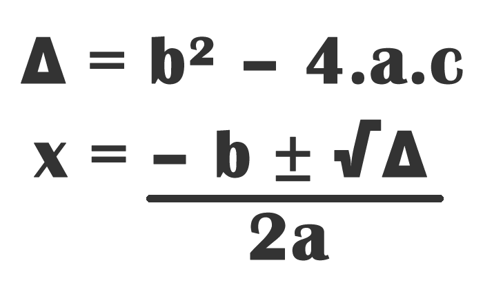

Conteúdo
Equações do 1° grau
Uma equação do primeiro grau é uma equação que segue a forma ax+b = 0, sendo que a e b podem ser quaisquer números conhecidos ou expressões que resultem em um número conhecido, enquanto x é a incógnita que deve ter seu valor encontrado. Como é possível ver pela forma padrão da equação de primeiro grau, a incógnita pode ser multiplicada, dividida, subtraída e adicionada a qualquer número. Porém, não pode conter operações de potenciação ou radiciação aplicadas diretamente em x, pois isso muda o grau da equação.
Vídeo Explicativo
Equações do 2° grau
Uma equação do segundo grau é uma equação que segue a forma ax^2 + bx + c = 0, sendo a, b e c, números ou expressões conhecidas, enquanto x é a incógnita que deve ser encontrada. Assim como no primeiro grau, a incógnita pode realizar qualquer operação básica com números quaisquer, exceto potenciação e radiciação. Porém para ser considerada uma equação do segundo grau, deve possuir a incógnita elevada ao quadrado em algum lugar, ou seja a não pode ser 0.
Vídeo Explicativo
Fórmula de Bhaskara
Como abordado no vídeo, precisamos da fórmula de bhaskara para a resolução:
Veja como surgiu a fórmula de Bhaskara: